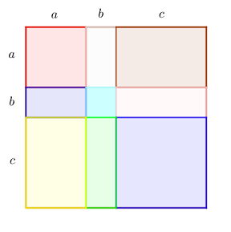
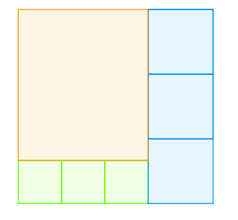

Exercices sur les calculs algébriques - Pour approfondir
Puissances
Enoncé 
Une image numérique est constituée de pixels, petits points auxquels une couleur est attribuée. La couleur est codée par une suite de bits, c'est-à-dire une suite de chiffres du type 0 ou 1. Si la couleur est codée par 1 bit, il n'y a que deux possibilités : le pixel est noir ou blanc. Si la couleur est codée par 2 bits, il y a 4 possibilités : 00, 01, 10, 11. Une telle image permet donc l'affichage de 4 couleurs différente.
- Combien de couleurs aurait une image dont chaque pixel est codé sur 3 bits?
- Comment augmente-t-on le nombre de couleurs lorsqu'on augmente de 1 le nombre de bits codant chaque pixel?
- Déterminer le nombre de couleurs dans une image dont chaque pixel est codé sur 10 bits.
- Les écrans d'ordinateur peuvent en général afficher 16 millions de couleurs. Sur combien de bits au moins faut-il coder chaque pixel pour pouvoir profiter de toutes les possibilités de l'écran?

Racines carrées
Exercice 2 - Introduction à la quantité conjuguée ♡ [Signaler une erreur] [Ajouter à ma feuille d'exos]
Enoncé
Démontrer que
$$\begin{array}{ll}
\displaystyle\mathbf{1.}\ \frac{1}{\sqrt 2-1}=\sqrt 2+1&
\displaystyle\mathbf{2.}\ \frac{1}{\sqrt 7-1}=\frac{\sqrt 7+1}{6}\\
\displaystyle\mathbf{3.}\ \frac{1}{\sqrt 7-\sqrt 5}=\frac{\sqrt 7+\sqrt 5}{2}.
\end{array}$$
Exercice 3 - Inverse d'une différence de deux racines carrées ♡ [Signaler une erreur] [Ajouter à ma feuille d'exos]
Enoncé
Soient $a$ et $b$ deux nombres réels avec $a\neq b$. Démontrer que l'inverse de $\sqrt a-\sqrt b$ est égal à $\frac{\sqrt a+\sqrt b}{a-b}$.
Identités remarquables et factorisation
Exercice 4 - Identités remarquables au secours de Diophante! ♡ [Signaler une erreur] [Ajouter à ma feuille d'exos]
Enoncé
Le problème suivant a été posé par Diophante, mathématicien grec vivant au IIIè siècle, dans le Livre 1 de son Arithmétique : on cherche à trouver deux nombres dont la somme est 20 et dont le produit est 96.
- On note $x$ et $y$ les nombres cherchés, $x$ étant supérieur ou égal à $y$. Traduire algébriquement (en terme d'équations) le problème.
- Développer et réduire $(x+y)^2-(x-y)^2$.
- En déduire $(x-y)^2$, puis $x-y$.
- En déduire $(x+y)+(x-y)$, puis $x$, puis $y$.
Exercice 5 - Une nouvelle identité remarquable! ♡ [Signaler une erreur] [Ajouter à ma feuille d'exos]
Enoncé
On considère, pour $a$, $b$ et $c$ trois réels positifs, la figure suivante formée d'un carré de côté $a+b+c$ partagé en 9 rectangles.

- Reproduire la figure et indiquer les aires de chaque rectangle.
- Exprimer de deux façons l'aire totale. Quelle identité a-t-on démontré lorsque $a,b,c\geq 0$.
- Démontrer l'identité dans le cas général.
Enoncé
Factoriser les expressions suivantes :
$$A(x)=49x^2-42x+9-(7x-3)(5x+2)$$
$$B(x)=4x^2-9+3x(2x-3)$$
$$C(x)=(x+1)(2x-3)+(x^2+2x+1)$$
Equations
Enoncé
Résoudre les équations suivantes :
\begin{array}{ll}
\displaystyle \mathbf{1.}\ \frac{2x+1}{4x+1}=\frac{x+3}{2x-5}&\displaystyle \quad\mathbf{2.}\ \frac{1}{x+1}-\frac{1}{x+4}=\frac 3x.
\end{array}
Enoncé
Dans une famille, la mère a deux ans de moins que le père.
L'âge du fils est égal au tiers de l'âge du père.
L'âge de la fille est égal au quart de l'âge de la mère.
Quel est l'âge de la mère (c'est la seule inconnue!!) sachant que le fils a trois ans de plus que la fille?
L'âge du fils est égal au tiers de l'âge du père.
L'âge de la fille est égal au quart de l'âge de la mère.
Quel est l'âge de la mère (c'est la seule inconnue!!) sachant que le fils a trois ans de plus que la fille?
Enoncé
Dans la figure ci-dessous, un grand carré a été partagé en un rectangle orange, trois carrés verts et trois carrés bleus. Sachant que l'aire du rectangle est de $168m^2$, quelle est l'aire du grand carré?

Pour compléter...
Calculs algébriques : racines, puissances, identités remarquables, équations